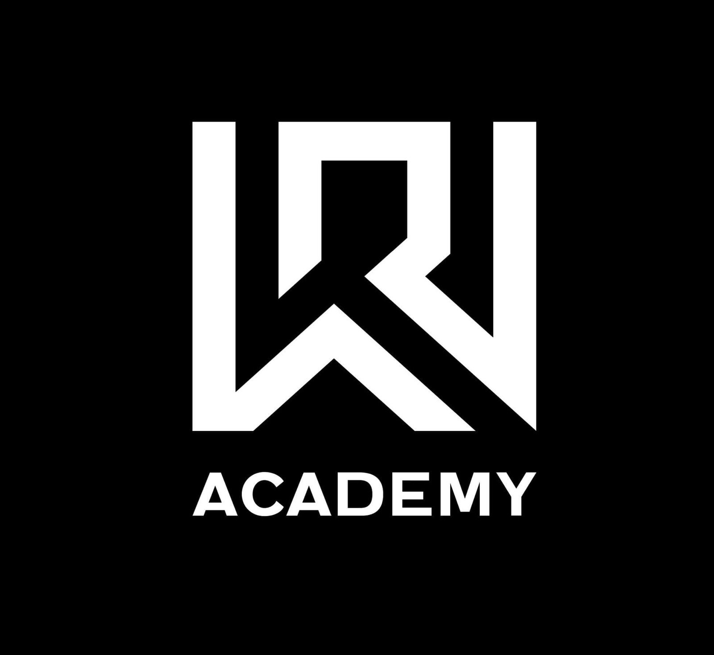

CzechAlert Služby
Soukromé zpravodajství a bezpečnost
Diskrétní zpravodajské a bezpečnostní služby postavené na ověřitelných faktech, pro jednotlivce, firmy i instituce, které řeší delikátní situace, rizika nebo nejistotu.
CzechAlert Služby
Diskrétní zpravodajské a bezpečnostní služby postavené na ověřitelných faktech, pro jednotlivce, firmy i instituce, které řeší delikátní situace, rizika nebo nejistotu.
Kombinujeme investigativní metody, zpravodajství z otevřených zdrojů a technické zázemí, abychom odkryli fakta, rozpoznali souvislosti a proměnili útržkovité informace v poznatky, o které se lze opřít.
Pokročilý sběr informací z otevřených zdrojů OSINT, od prověřených lidských zdrojů HUMINT a ze sociálních sítí SOCMINT. Výstupem jsou jasné a použitelné poznatky.
Forenzní zkoumání digitálních zařízení a dat s cílem odhalit, zajistit a předložit klíčové důkazy.
Identifikace anonymních osob působících na internetu, výhradně zákonnými vyšetřovacími postupy.
Strategická doporučení, jak omezit digitální stopu, ochránit citlivé informace a posílit soukromí jednotlivce i organizace.
Detekce a vyšetřování finančních podvodů, nekalého jednání a hospodářské kriminality.
Investigativní podpora vedená podle důkazních standardů vyžadovaných v soudních řízeních, pro firemní i právní vyšetřování všeho druhu.
Diskrétní investigativní služby pro citlivé a složité osobní situace.
Podpora při plnění regulatorních požadavků v obranném sektoru (např. NDAA) i předpisů proti korupci a uplácení (FCPA).
Důkladné prověření osob i subjektů jako spolehlivý podklad pro informované rozhodování.
Komplexní prověření společností, vlastnických struktur a provozních rizik.
Od digitálního soukromí po komerční a osobní bezpečnost, pomáháme odhalit slabá místa, snížit míru rizika a posílit odolnost pomocí ochranných strategií řízených zpravodajskými poznatky.
Profesionální ochrana osob vystavených zvýšenému riziku, diskrétně a s citem pro situaci.

Tuto službu poskytujeme ve spojení s našimi partneryOkamžité nasazení ochranného personálu při vznikající hrozbě nebo naléhavé situaci.
Tuto službu poskytujeme ve spojení s našimi partneryVyhodnocení rizik, zajištění důkazů a ochranné strategie proti obtěžování a vytrvalé nevyžádané pozornosti.
Bezpečnostní služby na míru pro firmy, rezidenční i komerční objekty, od provozních rizik přes ochranu majetku po bezpečí zaměstnanců.
Tuto službu poskytujeme ve spojení s našimi partneryPřipravujeme výcvikové programy na míru, které posilují fyzickou bezpečnost a situační připravenost jednotlivců i organizací.
Praktický výcvik, díky němuž jednotlivci i organizace rozpoznají hrozby a dokážou účinně reagovat ve zranitelném prostředí.
Tuto službu poskytujeme ve spojení s našimi partneryStrukturované programy pro bezpečnostní personál zaměřené na připravenost, disciplinu a operační efektivitu.
Tuto službu poskytujeme ve spojení s našimi partneryFyzický výcvik pod odborným vedením, který buduje sebejistotu, odolnost a obranné schopnosti. Kurzy jsou otevřené i veřejnosti.
Tuto službu poskytujeme ve spojení s našimi partneryProfesionální výuka bezpečného, odpovědného a účinného zacházení se střelnými zbraněmi (v mezích zákona).
Tuto službu poskytujeme ve spojení s našimi partneryOd dohledání majetku přes investigativní podporu až po strategii vymáhání, pomůžeme vám zorientovat se ve složitých sporech a získat zpět, co vám právem náleží. S rozvahou, diskrétně a s jasným plánem.
Strategické vyhledání a navrácení odcizeného nebo zpronevěřeného majetku.
Profesionální vymáhání dlužných částek postavené na strukturovaném postupu a zpravodajských poznatcích.
Otázky, které slýcháme nejčastěji, než spolupráce vůbec začne.
Ano. Pracujeme výhradně s otevřenými zdroji, zákonným lidským zpravodajstvím a technickým přístupem založeným na souhlasu. Nenabouráváme se do účtů, neodposloucháváme bez oprávnění a neporušujeme GDPR. Pokud by požadavek překročil zákonnou hranici, řekneme vám to na rovinu a nabídneme legální alternativu.
Každá zakázka běží pod podepsanou dohodou o mlčenlivosti (NDA). Spisy ukládáme šifrovaně, komunikace standardně probíhá přes end-to-end šifrované kanály a přístup k případu mají pouze analytici, kteří na něm pracují. Bez vašeho písemného souhlasu nezadáváme práci subdodavatelům v zahraničí.
Většinu případů oceníme fixní částkou po bezplatné třicetiminutové konzultaci. Průběžný monitoring a paušální spolupráci účtujeme měsíčně. Písemný rozsah prací i cenu znáte vždy dřív, než začneme cokoli šetřit.
Cílená OSINT zpráva je obvykle hotová za 5 až 10 pracovních dnů. Protiodposlechové prohlídky zpravidla naplánujeme do týdne. Složité případy napříč více jurisdikcemi mohou trvat i několik týdnů, realistický harmonogram znáte už při zadání.
Ano. Zprávy píšeme podle důkazních standardů, s úplnými citacemi zdrojů, hashi digitálních příloh a záznamem o nakládání s důkazy. V případě potřeby vystoupíme jako znalec a postup koordinujeme přímo s vaším právním zástupcem.
Popište nám, co řešíte. Prvních 30 minut konzultace je zdarma, zcela důvěrných a k ničemu vás nezavazuje.
Pojďme na to